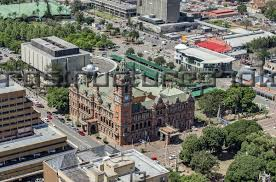
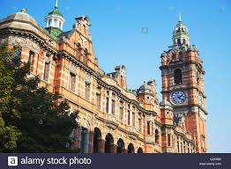
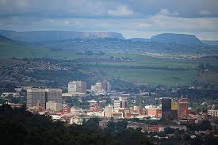
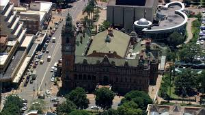
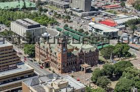
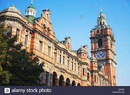
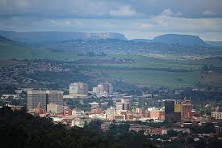
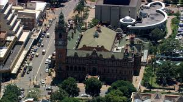

pietermaritzburg
Pietermaritzburg Since 1838 the town of Pietermaritzburg was the Capital of Natal. Today the Provincial Capital of KwaZulu-Natal has grown in size and number. This town sits on one of the great natural wonders of KwaZulu-Natal, The Valley of a Thousand Hills. Pietermaritzburg is an ideal place to stop and rest en route to Drakensburg and the Battlefields. One of the toughest marathons in the world takes place between the cities of Pietermaritzburg and Durban. Alternating where the race starts each year. One year you run downhill and the next year, you run uphill. It makes no difference which city you start the race, either way it's a grueling 90km run. Surprisingly, Pietermaritzburg is one of the most Victorian cities in the world
 






